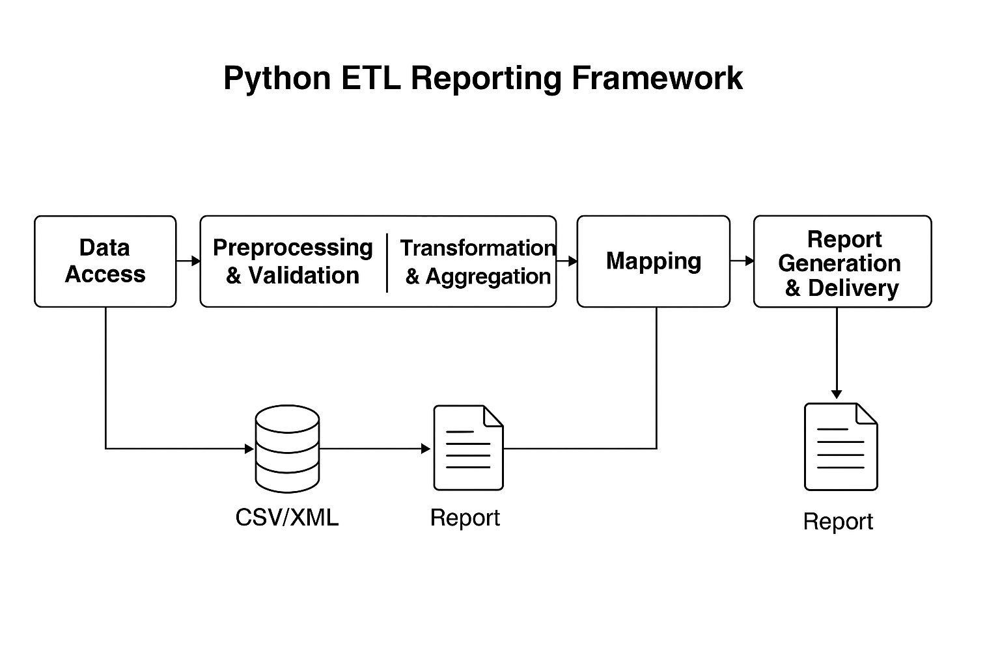

Project Overview
Developed a **Python-based ETL Reporting Framework** designed for automated extraction, transformation, and reporting of high-volume financial and operational data. The framework integrates multiple data sources, including **SQL Server, PostgreSQL, IBM DB2, CSV, Excel, and XML**, into reconciled, auditable reports. Its **component-based architecture** allows modular, reusable, and maintainable design, enabling quick adaptation to changing reporting requirements and regulatory standards.
Technical Implementation
- Designed a **modular Python ETL framework** with separate components for:
- Data Extraction (DB connectors, file readers for CSV/Excel/XML)
- Preprocessing & Validation (handling missing values, data cleansing, formatting)
- Transformation & Aggregation (vectorized Pandas operations, calculations, grouping)
- Mapping & Standardization (converting raw data to required reporting formats)
- Post-Processing & Reconciliation (validating outputs, generating error logs)
- Report Generation & Submission (XML, CSV, Excel outputs, integration with downstream systems)
- Implemented **Python OOP classes** for reusable ETL components, enabling isolation and independent testing of each module.
- Automated high-volume **data transformations using Pandas and NumPy**, ensuring accuracy, consistency, and performance.
- Integrated **SQL databases** and flat file sources with dynamic connection handling and secure credentials management.
- Provided **audit logging and exception handling** at each stage to ensure traceability and error diagnosis.
- Developed **configuration-driven workflows** allowing easy addition of new data sources or reports without modifying core code.
- Optimized ETL performance using **parallel processing, vectorized operations, and database indexing strategies**.
- Ensured **data security** by storing credentials securely and encrypting sensitive data during processing.
Component-Based Architecture
The framework follows a **component-based architecture**, separating functionality into modular, independent units. This design ensures **reusability, maintainability, and scalability**:
- Data Access Component: Handles connections to multiple databases and file sources (SQL Server, PostgreSQL, DB2, CSV, Excel, XML).
- Preprocessing & Validation Component: Cleanses, validates, and standardizes input data, handling missing or inconsistent values.
- Transformation & Aggregation Component: Applies business logic, calculates metrics, and aggregates data into structured formats.
- Mapping Component: Converts internal data structures into regulatory or business report formats.
- Post-Processing Component: Reconciles output, generates logs, and ensures data integrity.
- Report Generation & Delivery Component: Produces XML, CSV, or Excel reports and integrates with downstream systems for distribution.
- Configuration Component: Centralizes workflow definitions, making it easy to add or modify ETL processes without changing code.
This approach allows each module to be **developed, tested, and maintained independently**, significantly reducing errors and development time. It also supports **scalable and adaptable reporting pipelines**, capable of handling evolving business and regulatory requirements.
Business & Technical Analysis
- Collaborated with business teams to define report specifications and map source data accurately.
- Automated reconciliation and validation processes to reduce manual effort and operational risk.
- Prepared **technical documentation and developer guides** for maintainability and onboarding.
- Conducted performance profiling to optimize processing for large datasets.
- Implemented modular ETL pipelines enabling **fast adaptation** to new reporting requirements.
Key Achievements & Impact
- Delivered a **fully automated Python ETL Reporting Framework** with 100% data reconciliation.
- Enabled **auditable and high-volume reporting** for internal stakeholders.
- Developed a **modular, reusable, and scalable architecture** ready for future ETL projects.
- Reduced manual intervention, improved operational efficiency, and enhanced compliance readiness.
Technical Stack Summary
- Programming: Python (OOP, modular design)
- Data Processing: Pandas, NumPy
- Databases: SQL Server, PostgreSQL, IBM DB2
- File Formats: CSV, Excel, XML
- ETL Orchestration: Python modules, configuration-driven workflows
- Security & Credentials: Encrypted storage, secure DB connections
- Testing & Validation: Unit tests, reconciliation checks, audit trails
Component-Based Architecture Diagram
Below is a conceptual illustration of the ETL framework components:

Data flows sequentially through each component: Data Access → Preprocessing → Transformation → Mapping → Post-Processing → Report Generation & Delivery